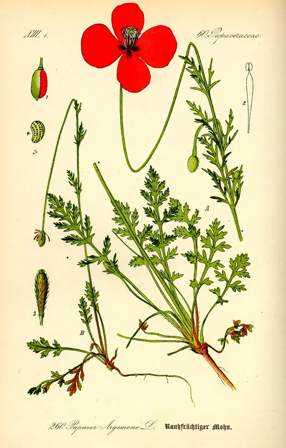

work
Draft a garden from an existing repository
Validating the generated context against the project.
Validating the generated context against the project.
typical 8:00 · n=12
Plate V · context-garden
What is moving, what comes next, and what it adds up to.
Shared model quotas
Validating the generated context against the project.
Checking that a superseded review cannot apply its verdict.
Implementation complete. The scheduler will run the checks.
Each queue moves on its own.
Run the planner in the worker environment
Workers on independent hosts
Make Mark done honour the base branch
Make task-file writes concurrent
Shared model quotas
Progress in context

Papaver argemone
12 / 50A garden in someone else’s environment.
Outcomes, not activity alone
12 merged · 83% first-pass approval
$38.42 recorded · 1 run unpriced
Scroll to compare models →
| Difficulty | gpt-5.6-luna | gpt-5.6-terra | gpt-6-astra |
|---|---|---|---|
| easy | $2.40↑n=8 | $4.80↓n=5 | $3.10n=2 † |
| medium | $5.20n=4 | $4.10↑n=6 | $8.70↓n=2 † |
| hard | —n=0 | $12.80=n=3 | $12.80=n=1 † |
| Difficulty | gpt-5.6-luna | gpt-5.6-terra | gpt-6-astra |
|---|---|---|---|
| easy | $0.80↑n=12 | $2.10↓n=9 | $1.20n=2 † |
| medium | $2.30n=7 | $1.80↑n=8 | $4.20↓n=2 † |
| hard | —n=0 | $5.40↑n=3 | $8.10↓n=1 † |
| Difficulty | gpt-5.6-luna | gpt-5.6-terra | gpt-6-astra |
|---|---|---|---|
| easy | 75%↓n=8 | 80%n=5 | 100%↑n=2 † |
| medium | 75%n=4 | 100%↑n=6 | 50%↓n=2 † |
| hard | —n=0 | 67%↓n=3 | 100%↑n=1 † |
| Difficulty | gpt-5.6-luna | gpt-5.6-terra | gpt-6-astra |
|---|---|---|---|
| easy | 0.3↓n=8 | 0.2n=5 | 0.0↑n=2 † |
| medium | 0.5n=4 | 0.0↑n=6 | 1.0↓n=2 † |
| hard | —n=0 | 0.3↓n=3 | 0.0↑n=1 † |
| Difficulty | gpt-5.6-luna | gpt-5.6-terra | gpt-6-astra |
|---|---|---|---|
| easy | 14 minn=8 | 22 min↓n=5 | 12 min↑n=2 † |
| medium | 32 minn=4 | 26 min↑n=6 | 48 min↓n=2 † |
| hard | —n=0 | 67 min↑n=3 | 80 min↓n=1 † |
↑ best · ↓ worst · = tied or only value · † n < 3, provisional
Grounds compare within a row. Colour is never the only signal.
Inspection sheet · all examples are simulated
The live page uses these treatments in place. This sheet keeps them visible for design review.
Validating the generated context against the project.
Every PR reaches the review queue
Waiting for CI before merge. Keep for eight seconds, then settle into recent activity.
Base branch checks failed.
Other workers continue. This reason stays visible until the hold clears.
Account quota reached.
New codex work waits; in-flight clocks keep counting. No retry time reported.
The acceptance check returned an error.
Run stopped at 1:08. The failure stays until a retry or a decision resolves it.
Approve a task to begin.
Waiting for an approved task.
Phase and past outcomes stay visible. There is no idle animation.
Last received at 02:44 UTC.
Retain the last snapshot. Clocks show elapsed since start; they cannot prove a worker is still alive.
Queue unavailable · typical not established · progress not mapped.
Costs and outcomes show —. Missing history is not an empty garden.